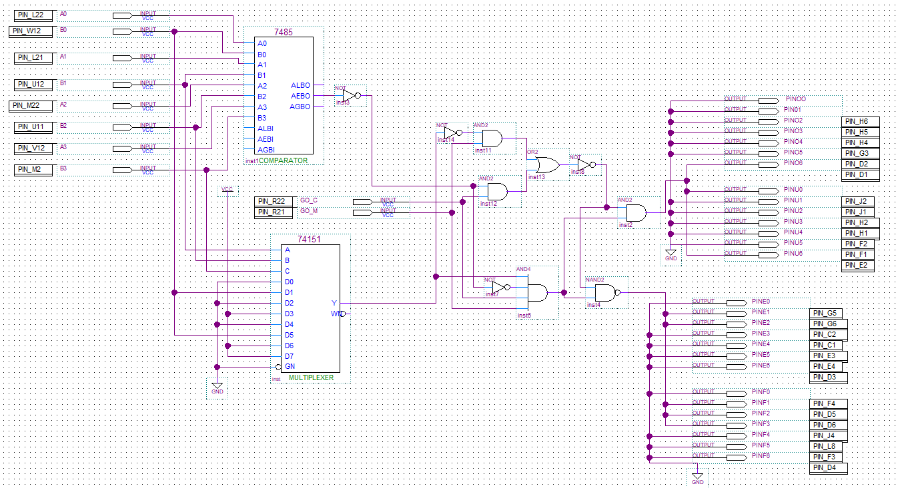

Ce projet, réalisé seul en première année de BUT GEII, consistait à concevoir une alarme de porte entièrement basée sur de la logique numérique. L'objectif était de créer un système où l'alarme se déclenche à l'ouverture de la porte, sauf si le code utilisateur correct a été entré au préalable. L'ensemble de la conception et de la simulation a été réalisé avec le logiciel Quartus.
Conception Logique et Blocs Fonctionnels
J'ai conçu le système en le décomposant en quatre blocs logiques principaux. Pour chaque bloc, la méthode était la même : définir le comportement attendu via une table de vérité, simplifier l'équation logique qui en découle à l'aide d'un tableau de Karnaugh, puis implémenter cette équation dans Quartus. Chaque bloc a ensuite été testé individuellement avec un waveform (chronogramme) pour valider son fonctionnement.
Les blocs conçus étaient :
- Ouverture Porte (SP) : Gère les conditions logiques d'ouverture de la porte.
- Ouverture Alarme (SA) : Gère le déclenchement de l'alarme, notamment en cas de code erroné.
- Comparateur de codes : Un bloc essentiel qui compare, bit à bit, le code administrateur et le code utilisateur entrés via huit interrupteurs.
- Contrôle du code : Un bloc plus complexe utilisant un multiplexeur pour vérifier la séquence correcte d'activation des interrupteurs.
Intégration et Bilan du Projet
Enfin, j’ai intégré tous ces blocs dans un seul fichier maître, assigné les entrées et sorties logiques aux broches physiques de la carte de développement, et réalisé des tests finaux pour valider l'ensemble du système.
Ce projet m'a permis d'acquérir une maîtrise solide du logiciel Quartus, depuis la saisie de schémas jusqu'à la simulation et l'assignation des broches. J'ai surtout développé une compétence clé en conception de logique numérique, en appliquant de manière concrète les concepts théoriques des tables de vérité et des tableaux de Karnaugh pour résoudre un problème pratique.
Compétences Développées sur ce Projet
| Compétence | Détail de la compétence | Niveau d’acquisition |
|---|---|---|
| Maîtrise du logiciel Quartus | Utilisation des fonctions logiques, création de schémas, simulation avec waveform et assignation des broches. | |
| Tables de vérité & Karnaugh | Application pratique des tables de vérité et des tableaux de Karnaugh pour simplifier des équations logiques. | |
| Conception de schémas logiques | Utilisation et association de différentes fonctions logiques (portes, multiplexeur) pour créer un système complet. | |
| Résolution de Problèmes | Identifier et corriger les erreurs logiques lors des compilations et des simulations. |
Détails du Projet (Vidéo & Image)
Voici une démonstration de la programmation finale sur la carte, ainsi qu'une image du schéma logique global.
